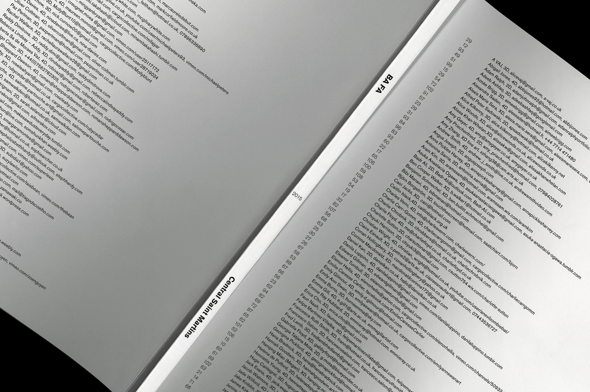

The CSM BA Fine Art class of 2015 asked us to design their graduation catalog, 2015.
The initial brief was to make the catalog soft-covered and magazine-sized, with the layout taking the classic minimalist approach of “letting the artworks speak for themselves” and thereby “adding as little design as possible”, while at the same time avoiding the standard format of straight image-blurb-image-blurb. For each of the almost 150 artist/students we had to accompany images of artworks, descriptions, and a blurb. There were also seven commissioned texts and one interview to include. That the catalog be thin and “magazine-like” was an important aspect to the committee. (more)

- 


Our solution was to develop a grid system with the ability to accommodate all of those different elements, but that would also look good if it were in places to contain only one of the elements, as we anticipated that the contributors would not all be supplying the same kind of content. And due to the sheer volume of content, our system had to be very rational and leave very few variables for us to adjust, so that we wouldn’t have to obsess over details too much. At the same time the system had to have a certain flexibility to it, in order to give the impression of a publication in constant flux.
We ended up splitting the spread in four, so that we could accompany four students on each spread and in turn keep the overall thickness of the publication to a minimum. This created another major challenge towards the end, as we had to rearrange the students and move them between pages to make sure there was a certain amount of balance and no clashing sections.
Without indicating so, we divided the students into clusters based on the different areas of the degree show exhibition. That way the visitors would avoid having to go back and forth in the catalog to find who they were looking at, but rather go through more or less page-by-page as they moved through the exhibition.
BA Fine Art Catalog 2015
BA Fine Art, Central Saint Martins
Soft Cover Catalog
(more)
Variations I was conceived as a series of chance operations that ultimately led to the creation of a publication realised by Central Saint Martins students in London.
Variations I consists of a set of instructions that like musical scores have the potential to be realised by anyone other than the original creator. The instructions involve real and imaginary actions, ideas, and objects from everyday life re-contextualised as performance. (more)


Taking its name from an experimental musical score written by the American composer John Cage in 1958, Variations I aims to turn its readers into active interpreters and participants by enabling them to perform, interpret and play with the instructions in different ways.
Inspired by Fluxus and conceptual artistic and curatorial practices of the 1960s, this publication could be seen as having a tripartite nature: as an “object” to be played with, a “portable exhibition” consisting of “Open Works”, and as a collection of “Texts” to be performed.
Our role in this collaboration was as art directors, designers, co-curators, and contributors. The publication was risograph printed, french-folded, and bound with a binding clip. These factors all serve the purpose of making a cost-effective, intriguing, tactile object that could be easily disassembled, reassebled, and used.
variations1.tumblr.com
Variations I
with Marta Cacciavillani
Artist publication, 2014
(more)
At vero eos et accusamus et iusto odio dignissimos ducimus qui blanditiis praesentium voluptatum deleniti atque corrupti quos dolores et quas molestias excepturi sint occaecati cupiditate non provident, similique sunt in culpa qui officia deserunt mollitia animi, id est laborum et dolorum fuga. (more)


Et harum quidem rerum facilis est et expedita distinctio. Nam libero tempore, cum soluta nobis est eligendi optio cumque nihil impedit quo minus id quod maxime placeat facere possimus, omnis voluptas assumenda est, omnis dolor repellendus.
Temporibus autem quibusdam et aut officiis debitis aut rerum necessitatibus saepe eveniet ut et voluptates repudiandae sint et molestiae non recusandae. Itaque earum rerum hic tenetur a sapiente delectus, ut aut reiciendis voluptatibus maiores alias consequatur aut perferendis doloribus asperiores repellat.